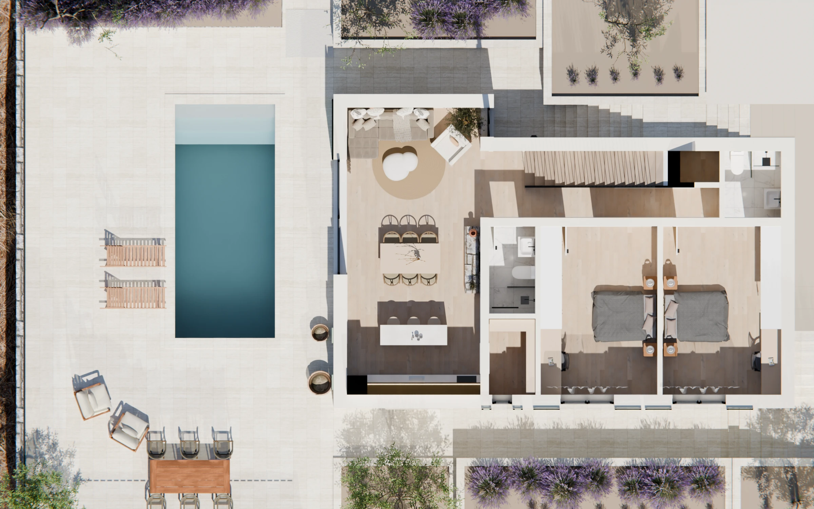
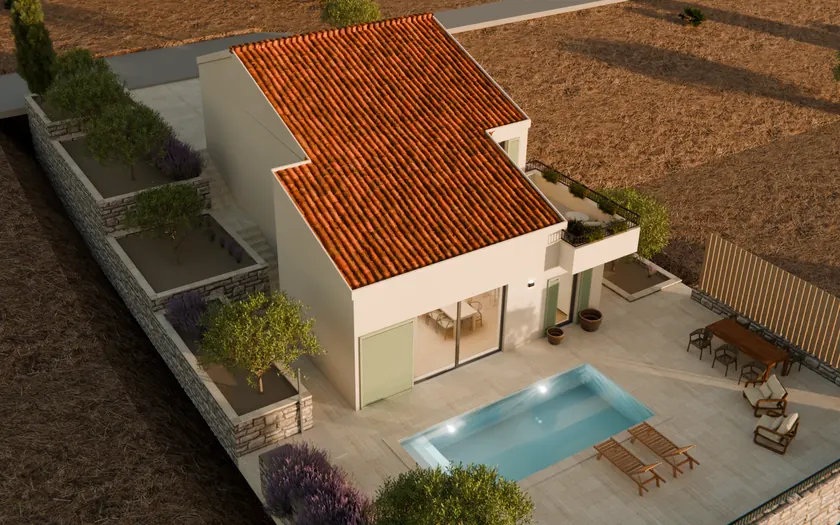

Render. Kuća još nije sagrađena. Vizualizacija prema idejnom rješenju. Oprema, raslinje i okoliš prikazani su ilustrativno.
±0,00 = +43,41 m.n.v.Kuća Car
Tlocrt prizemlja
mjerilo: 1 : 1Šetnja kreće od bazena, kroz vrt u kuću.
- lokacija:
- Supetar · otok Brač
- faza:
- idejno rješenje
- etaže:
- P + 1
- točke šetnje:
- 39
- doba dana:
- 3popodne · zalazak · noć